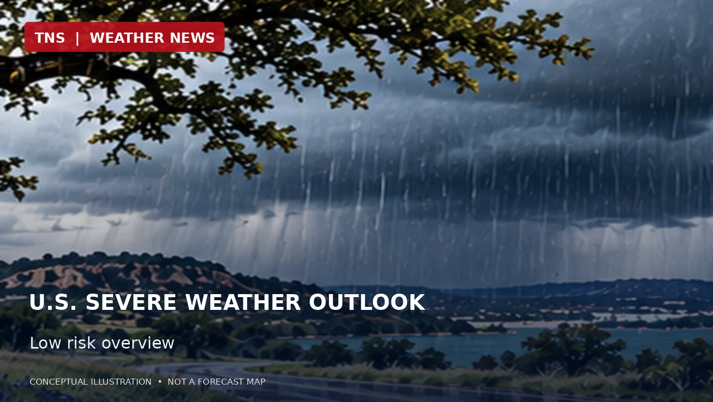

U.S. Weekend Severe Storm Risk Remains Low, SPC Says
The national outlook highlights a quiet severe-weather pattern Saturday, even as showers and thunderstorms develop in Texas.

Original AI-generated editorial illustration. Not radar, satellite imagery, or numerical model output.
The national picture
The Storm Prediction Center’s Day 2 outlook issued early Friday says no organized severe-thunderstorm areas are forecast across the United States for Saturday and Saturday night.
Why Texas can still see thunderstorms
An upper-level low over northern Mexico will draw moisture northward into South and Central Texas. Scattered thunderstorms may develop from the Trans-Pecos eastward Saturday afternoon and overnight, but the SPC expects instability to be too weak for an organized severe threat.
Elsewhere
Another upper-level low will move east across the Northeast toward the western Atlantic. The SPC does not forecast thunderstorms elsewhere in the continental United States Saturday night. This is a severe-thunderstorm outlook, not an all-hazards forecast: rain, wind, coastal hazards and local flooding can occur without a severe-thunderstorm risk area.
Stay current
Forecasts can change as newer observations and model guidance arrive. Check local NWS alerts and updated SPC outlooks before travel or outdoor activities.
Official forecast sources
- https://forecast.weather.gov/product.php?format=ci&glossary=1&issuedby=DY2&product=SWO&site=MKX&version=1
- https://www.spc.noaa.gov/products/outlook/
Forecast information is time-sensitive. Check the latest official outlooks for changes and active warnings.